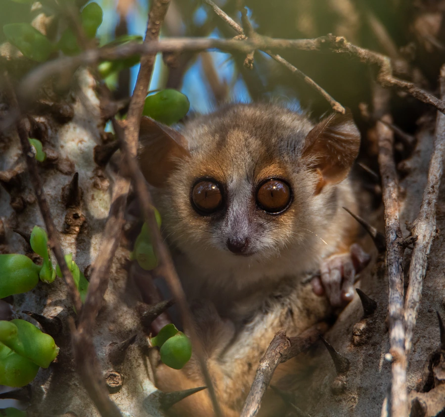

哺乳动物 · 动物界
灰鼠狐猴 Microcebus murinus

马达加斯加岛的小型夜行狐猴，体长仅 12 厘米左右、眼睛巨大，能进入日休眠状态节省能量，是灵长类中的小不点。
- 分类
- 门脊索动物门纲哺乳纲目灵长目科狐猴科属鼠狐猴属
- 栖息环境
- 马达加斯加岛西部和南部的干旱落叶林、多刺林与次生林
- 地理分布
- 马达加斯加岛西部和南部，为当地特有种
- 保护级别
- IUCN 无危（LC）
物种志
灰鼠狐猴体长 12–14 cm，尾长约 13–15 cm，体重仅 50–100 g，是最小的灵长类之一。它的被毛为灰褐色，腹部浅灰，眼睛大而圆，耳朵小而圆，吻部尖；后肢较长，善于跳跃，手脚的指头有膨大的肉垫，便于抓握树枝。
灰鼠狐猴是马达加斯加岛的特有种，分布于岛西部和南部的干旱落叶林、多刺林和次生林，是树栖夜行动物。它白天在树洞或树叶巢中休息，夜间单独或成对活动，以果实、花蜜、树胶和昆虫为食；在食物匮乏的旱季，它会进入日休眠状态，降低体温和代谢率以节省能量。雌性妊娠期约 60 天，每胎 2–3 仔，幼仔出生时仅几克。灰鼠狐猴是研究灵长类休眠和能量代谢的重要对象，目前被列为无危。
形态与习性
- 食性果实、花蜜、树胶与昆虫
- 体长12–14 cm，尾长约 13–15 cm
- 体重50–100 g
- 寿命野外约 5–8 年
- 繁殖妊娠期约 60 天，每胎 2–3 仔
- 活动节律夜行，白天在树洞或叶巢休息
- 特殊能力旱季可进入日休眠，降低体温和代谢率
趣味知识
- 灰鼠狐猴体重只有 50–100 克，是最小的灵长类之一。
- 它的眼睛又大又圆，适合在夜间活动觅食。
- 旱季食物不足时，它会进入日休眠状态以节省能量。
- 灰鼠狐猴是研究灵长类休眠和代谢的重要对象。